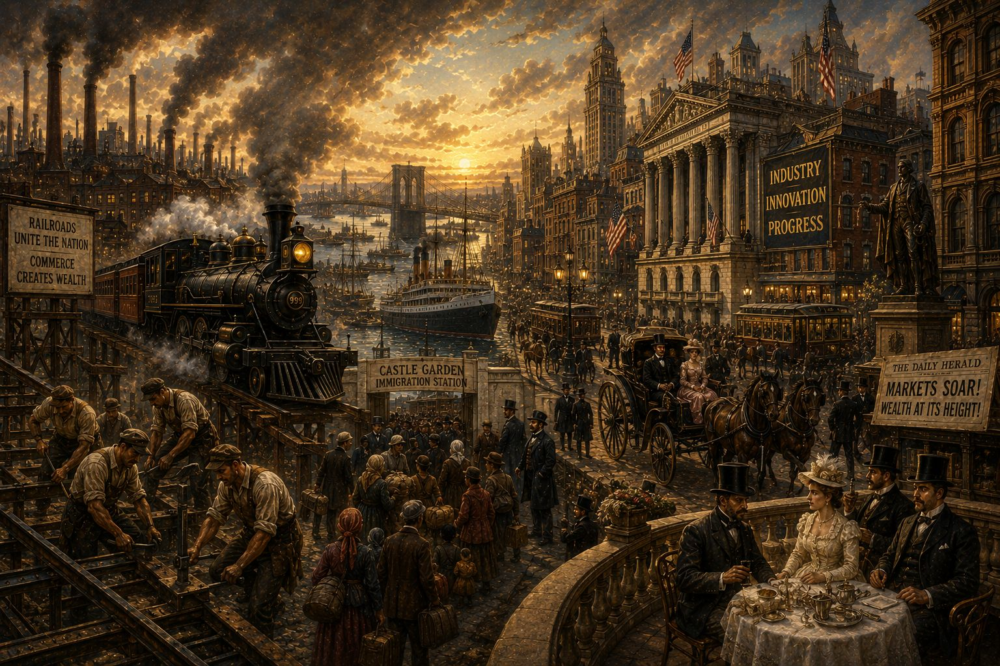
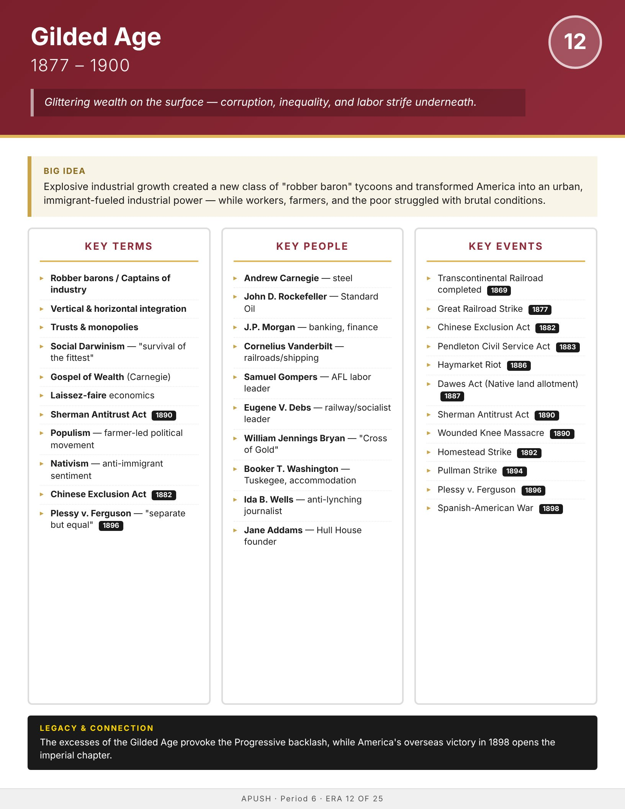

Era
Wise
AP History
AP United States History
Home
Course Sequence
Eras
Exam Prep
DBQ Guides
← Course Sequence

Era 12 of 25 · AP Period 6 · Lessons 28–30
Gilded Age
1877–1900
Open infographic full size
Print

← ERA 11
Reconstruction
ALL ERAS
Eras index
ERA 13 →
American Imperialism